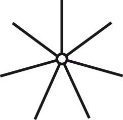
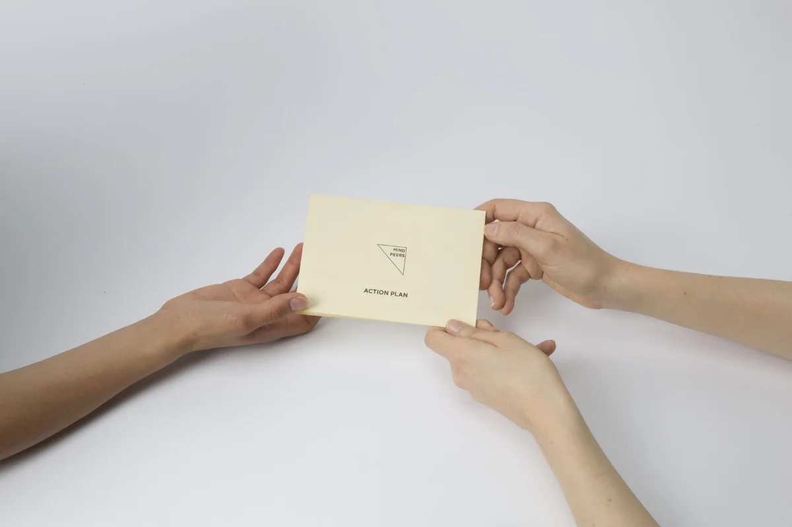

/services
I bring product discovery, service design and research together, wherever a project needs them.
What I do

User experience and product design
Research, wireframing and prototyping, built on over a decade of craft and now extended with AI enabled workflows.

Service design and research
Systems thinking, service mapping and journey management, across both B2B platforms and services built for consumers.

Design leadership and facilitation
Workshops, design sprints and cross-functional team alignment, from early discovery through to shipped decisions.
How we could work together
Have a problem worth untangling?
let's talk →/mindnosis
Design sessions, workshops and artefacts
Hands-on, design-led workshops tailored to teams, individuals and a variety of settings. Combining evolved elements from my previous work experience and self-directed practice to give people a simple, non-clinical way to check in on how they're doing or facilitate difficult conversations.
Single session
One 90-minute workshop for a single team, department, or group.
Series
3–4 sessions across a quarter, building on themes raised in the previous one.
Train-the-trainer
Equip your own facilitators to run the activity themselves.
Every session starts with a short call to tailor content to your context, and ends with a light digital follow-up tool participants can return to individually.
Explore Mindnosis →